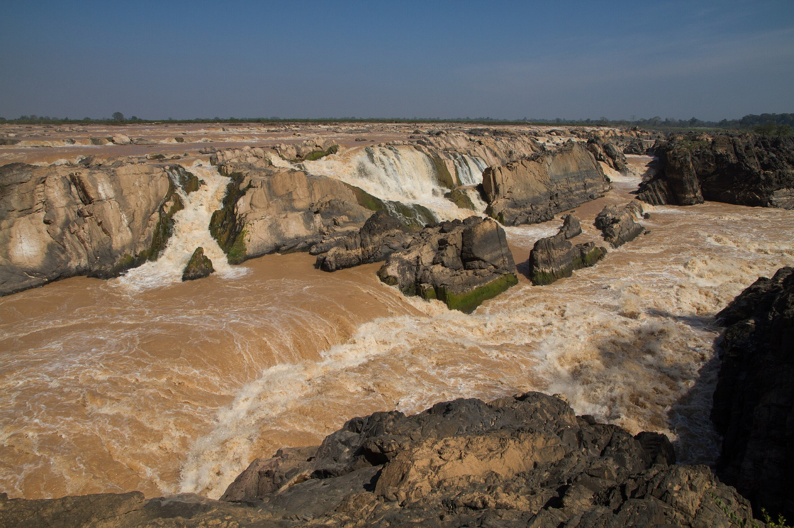

Stung Treng (Khmer: ស្ទឹងត្រែង,"River of Reeds") is a province of Cambodia in the northeast. It borders the provinces of Ratanakiri to the east, Mondulkiri and Kratié to the south and Kampong Thom and Preah Vihear to the west. Its northern boundary is Cambodia's international border with Laos. The Mekong River bisects the province. The province is mostly covered by forest, but logging and fishing put high pressure on the forest and fishery reserves.
